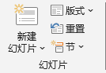
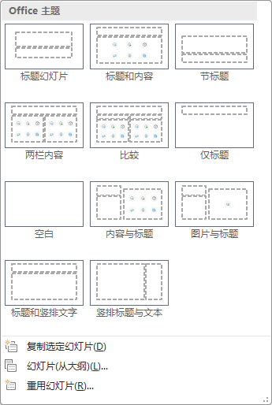
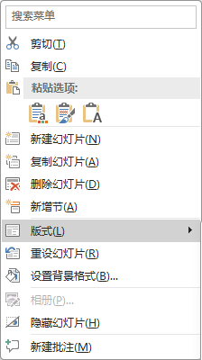
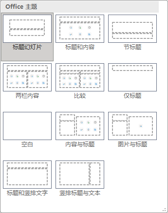
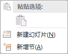
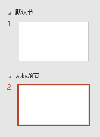
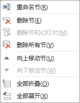
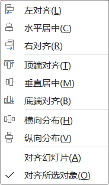
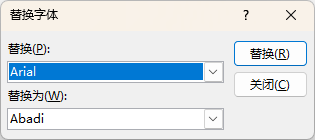

开始
Home
- 内容 Contents
- 幻灯片 Slides
- 绘图 Drawing
- 编辑 Editing → 替换 Replace
幻灯片 Slides

幻灯片
- 新建幻灯片 New Slide
- 方案1：在"幻灯片"窗格中，将光标定位到插入位置的前后幻灯片中间，出现一条红色提示线，按回车 Enter；幻灯片版式默认同前一张保持一致
- 方案2：使用菜单命令"新建幻灯片"；可以选择版式；快捷键 CTRL + M

插入幻灯片命令
- 版式 Layout
- 为选择的幻灯片指定版式
- 版式应先在："视图" → "幻灯片母版"中定义
- 方案：选择幻灯片 → 右键 → 版式

幻灯片右键菜单

幻灯片右键菜单 - 版式
- 重置 Reset
- 幻灯片应用版式后，如果对内容进行了样式调整，想放弃调整，可以使用这个命令，还原到版式设置的最初样式
- 节 Section
- 使用节分类/整理幻灯片
- 默认情况下，所有幻灯片属于同一节"默认节"
- 方案："幻灯片"窗格空白处 → 右键 → 新增节，指定名字后确认

新增节

幻灯片多节结构
- 节标题：
单击 → 可以单独设置当前节的主题样式
右击 → 可修改重命名、移动、展开、删除等
单击并拖动 → 调整节的位置
单击节标题前面的三角符号：快速展开和折叠幻灯片

节的右键菜单
绘图 Drawing
- 图形绘制请参考 插入 选项卡
- 排列 Arrange
- 单个对象：单个对象的参考对象是幻灯片
- 多个对象：按照他们的占用空间指定排列方式

对象排列
编辑 Editing
- 替换 Replace
1. 替换
- 查找和替换
- 快捷键： CTRL + H
2. 替换字体

替换字体
练习 Drill
幻灯片基本操作
- 插入
- 选择：单选、多选、连续选择 SHift + 单击、断续选择 Ctrl + 单击、全选 CTRL + A
- 移动：选择并拖动；幻灯片数量多的时候，使用"幻灯片浏览"视图操作
- 复制：选择并复制；按键 Ctrl + C
- 粘贴：定位并粘贴；按键 Ctrl + V
- 删除：选择并删除，按键 Delete
- 版式：右键幻灯片 → "版式"；或选择幻灯片 → "开始" → "幻灯片" → "版式"